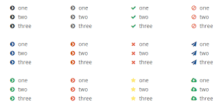

La imagen de lista (list-style-image) define la imagen que será utilizada como marcador del listado. valor inicial: ninguno Se aplica a: elementos con 'display: list-item' valor heredado: Sí Porcentajes: n/a Medio: visual valor calculado: URI absoluta o none
list-style-image: < uri > | none | inherit
uri directorio donde se encuentra la imagen que se utilizará como marcador.
< ul > < li >Item 1< /li > < li >Item 2< /li > < /ul >
ul { list-style-image: url("https://mdn.mozillademos.org/files/11981/starsolid.gif")}
